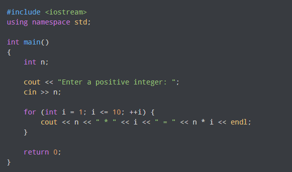

What is C++?

C++ is a powerful general-purpose programming language. It can be used to develop operating systems, browsers, games, and so on. C++ supports different ways of programming like procedural, object-oriented, functional, and so on. This makes C++ powerful as well as flexible.
About C++ Programming
- Multi-paradigm Language
- General Purpose Language
- Speed
- Object-oriented
C++ supports at least seven different styles of programming. Developers can choose any of the styles.
You can use C++ to develop games, desktop apps, operating systems, and so on.
Like C programming, the performance of optimized C++ code is exceptional.
C++ allows you to divide complex problems into smaller sets by using objects.
Why Learn C++?
- C++ is used to develop games, desktop apps, operating systems, browsers, and so on because of its performance.
- After learning C++, it will be much easier to learn other programming languages like Java, Python, etc.
- C++ helps you to understand the internal architecture of a computer, how computer stores and retrieves information.